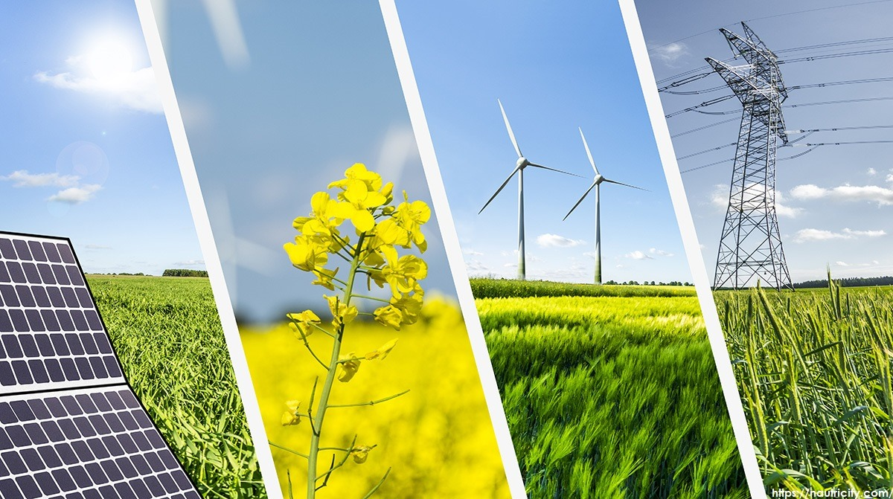

El impacto medioambiental de las energías no renovables y contaminantes
Las energías renovables buscan promover la sostenibilidad y reducir la huella de carbono, siendo una solución clave para mitigar el cambio climático. Aunque todas contribuyen positivamente al medioambiente, algunas tienen un menor impacto que otras. La energía solar fotovoltaica es una de las más limpias y menos contaminantes, ya que no produce CO2 ni contribuye al efecto invernadero. Además, es silenciosa, no afecta negativamente al paisaje o al suelo, y no requiere agua para generar energía. Los paneles solares son fabricados con materiales reciclables como silicio, vidrio y aluminio, y tienen una vida útil de hasta 30 años, tras los cuales pueden reciclarse casi en su totalidad. Según un estudio de Our World Data, la energía solar es la más segura, con el menor número de muertes relacionadas con su uso en comparación con otras fuentes de energía. 